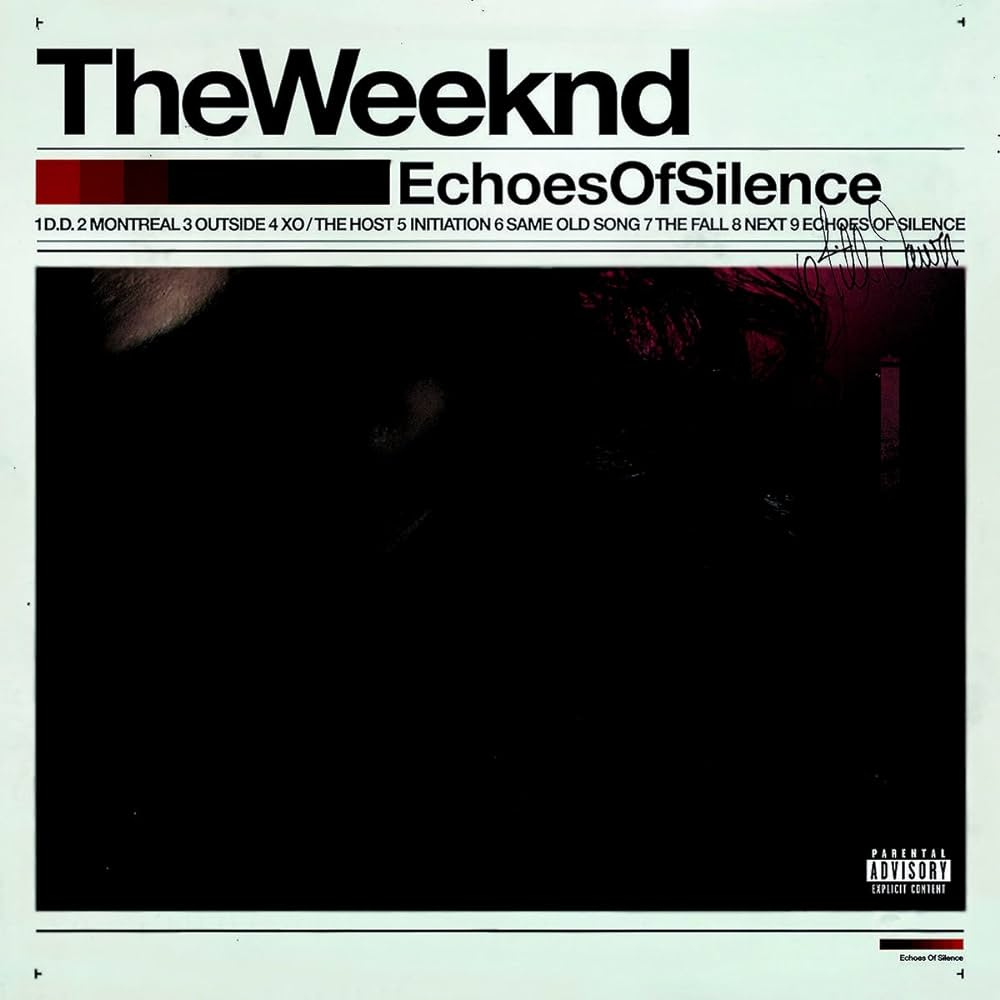

House Of Balloons (2011)

House of Balloons es el mixtape debut del cantante canadiense The Weeknd. Fue lanzado como descarga digital gratuita el 21 de marzo de 2011, por XO, y luego se encontró disponible en su sitio web oficial. Su música incorpora géneros electrónicos y urbanos, incluyendo R&B y soul, junto con trip hop, indie rock y tonos de dream pop. La producción estuvo a cargo de los productores discográficos canadienses Doc McKinney, Zodiac e Illangelo, entre otros.
En septiembre de 2013, The Weeknd reveló que The House of Balloons es un lugar real, ubicado en la 65 Spencer Ave en Toronto.
Tracklist:
- High for This
- What You Need
- House of Ballons / Glass Table Girls
- The Morning
- Wicked Games
- The Party & The After Party
- Coming Down
- Loft Music
- The Knowing
Escuchar en Spotify:
Thursday (2011)

Thursday es el título del segundo mixtape del artista canadiense The Weeknd, lanzado de manera independiente el 18 de agosto de 2011. El lanzamiento sigue al de su mixtape debut, nominado al Polaris Music Prize, House of Balloons (2011). Su música incorpora estilos de downtempo, dubstep, dream pop, hip hop, rock y reggae. Al igual que con sus trabajos anteriores, los productores discográficos canadienses Doc McKinney e Illangelo fueron los responsables de la producción de la grabación. El artista de Young Money, Drake, contribuye como vocalista invitado en la canción "The Zone".
Tracklist:
- Lonely Star
- Life of the Party
- Thursday
- The Zone (FT. Drake)
- The Birds Pt. 1
- The Birds Pt. 2
- Gone
- Rolling Stone
- Heaven or Las Vegas
Escuchar en Spotify:
Echoes Of Silence (2011)

Echoes of Silence es el tercer mixtape del cantante canadiense The Weeknd, lanzado el 21 de diciembre de 2011, a través de su sitio web oficial. El lanzamiento sigue al de su mixtape debut nominado al Polaris Music Prize House of Balloons y al de su segundo mixtape Thursday, ambos lanzados a principios del mismo año. El proyecto es la última entrega de la trilogía de álbumes gratuitos lanzados por The Weeknd en 2011.
Previo a su lanzamiento, "Initiation" se lanzó como el primer sencillo del disco. Su viejo colaborador Carlo "Illangelo" Montagnese volvió a producir la mayor parte del proyecto, con otras contribuciones provenientes de Clams Casino y DropxLife del equipo XO. El rapero Juicy J contribuye con un breve interludio al final de "Same Old Song".
Tracklist:
Escuchar en Spotify:
Kiss Land (2013)

Kiss Land es el título del primer álbum de estudio del cantante canadiense The Weeknd. Fue lanzado en los Estados Unidos el 10 de septiembre de 2013, por XO y Republic Records. Kiss Land fue apoyado por seis sencillos: "Kiss Land", "Belong to the World", "Love in the Sky", "Live For", "Pretty" y "Wanderlust". La única aparición especial del álbum es de su frecuente colaborador Drake. La producción del álbum fue manejada principalmente por Danny Boy Styles, The Weeknd y Jason "DaHeala" Quenneville. Tras su lanzamiento, Kiss Land recibió críticas generalmente positivas de los expertos. En Metacritic, el álbum recibió una puntuación media de 65, basado en 31 opiniones. El álbum debutó en el número 2 en el Billboard 200, vendiendo 95.000 copias en su primera semana. A partir de agosto de 2015, el álbum ha vendido 273.000 copias en los Estados Unidos.
Tracklist:
- Professional
- The Town
- Adaptation
- Love In The Sky
- Belong To The World
- Live For(Ft. Drake)
- Wanderlust
- Kiss Land
- Pretty
- Tears In The Rain
En su versión deluxe, introduce los siguientes temas:
Escuchar en Spotify:
Beauty Behind the Madness (2015)

Beauty Behind the Madness es el segundo álbum de estudio del cantante canadiense The Weeknd. Republic Records y XO lo lanzaron alrededor del mundo el 28 de agosto de 2015 como descarga digital. El álbum presenta apariciones especiales de Labrinth, Ed Sheeran y Lana Del Rey, con una producción manejada por el propio The Weeknd, Stephan Moccio, DaHeala, Illangelo, Ben Billions, DannyBoyStyles, Max Martin y Ali Payami, entre otros.
"Often", "The Hills", "Can't Feel My Face", "In the Night", y "Acquainted" apoyaron el lanzamiento del álbum. "The Hills" y "Can't Feel My Face" alcanzaron el número uno en el Billboard Hot 100 de los Estados Unidos. El álbum también incluye "Earned It", la canción nominada al Premio de la Academia a la "Mejor canción original", que se lanzó como un sencillo de la banda sonora de Cincuenta Sombras de Grey.
Tracklist:
- Real Life
- Losers (Ft. Labrinth)
- Tell Your Friends
- Often
- The Hills
- Acquainted
- Can't Feel My Face
- Shameless
- Earned It
- In the Night
- As You Are
- Dark Times (Ft. Ed Sheeran)
- Prisoner (Ft. Lana Del Rey)
- Angel
La versión japonesa se le suman tres canciones más que son remixes, como pasaba con Kiss Land
- Can't Feel My Face (Martin Garrix Remix)
- The Hills (Eminem Remix) (Ft. Eminem)
- The Hills (Nicki Minaj Remix) (Ft. Nicki Minaj)
Escuchar en Spotify: (la versión japonesa solo se distrbuyó por CD, no se puede escuchar en spotify)
STARBOY (2016)


Starboy es el título del tercer álbum de estudio del cantante y compositor canadiense The Weeknd. XO y Republic Records lanzaron el disco el 25 de noviembre de 2016. El álbum cuenta con varios artistas invitados tales como Daft Punk, Lana Del Rey, Future y Kendrick Lamar. El álbum fue apoyado por siete sencillos: "Starboy", "I Feel It Coming", "Secrets", "Party Monster", "Reminder", "Rockin'" y "Die for You".
«Starboy» recibió revisiones generalmente positivas de los críticos y debutó en el número uno en la lista Billboard 200, vendiendo 348 000 unidades equivalentes al álbum y 209 000 copias físicas en la primera semana. También debutó en el número uno en la lista de Billboard, Canadian Albums Chart. En enero de 2019, el álbum recibió la certificación de triple platino por la Recording Industry Association of America (RIAA). El álbum ganó el Premio Grammy al Mejor Álbum Urbano Contemporáneo en la entrega número 60 de los Premios Grammy.
Tracklist:
- Starboy (Ft. Daft Punk)
- Party Monster
- False Alarm
- Reminder
- Rockin'
- Secrets
- True Colors
- Stargirl Interlude (Ft. Lana Del Rey)
- Sidewalks (Ft. Kendrick Lamar)
- Six Feet Under
- Love to Lay
- A Lonely Night
- Attention
- Ordinary Life
- Nothing Without You
- All I Know (Ft. Future)
- Die For You
- I Feel It Coming (Ft. Daft Punk)
La versión japonesa solo introduce un remix, que ya está en la versión deluxe
7 años después, The Weekend sacaría la versión deluxe
- Starboy (Kygo Remix) (Ft. Daft Punk)
- Reminder (Remix) (Ft. A$AP Rocky & Young Thug)
- Starboy (Radio Edit) (Ft. Daft Punk)
Escuchar en Spotify: (la versión japonesa solo se distrbuyó por CD, no se puede escuchar en spotify)
After Hours (2020)


After Hours es el cuarto álbum de estudio del cantante canadiense The Weeknd. Fue lanzado el 20 de marzo de 2020 por XO y Republic Records. Fue producido principalmente por The Weeknd, junto con una variedad de productores como DaHeala, Illangelo, Max Martin, Metro Boomin y OPN, la mayoría de los cuales The Weeknd había trabajado anteriormente. La edición estándar del álbum no tiene colaboraciones con otros artistas, pero la edición de remixes contiene apariciones especiales de Chromatics y Lil Uzi Vert. Temáticamente, After Hours explora la promiscuidad, el exceso de indulgencia y el autodesprecio. El álbum tiene una fuerte influencia de los sonidos de los 80's.
Antes del lanzamiento del álbum, Weeknd confirmó que After Hours enfrentaría diferencias estilísticas con su predecesor, Starboy (2016). Los periodistas musicales han señalado el álbum como una reinvención artística para The Weeknd, con la introducción de influencias del new wave y dream pop. El arte y la estética del material promocional del álbum han sido descritos como psicodélicos y están inspirados en varias películas, como: Casino (1995), Fear and Loathing in Las Vegas (1998), Joker y Uncut Gems (ambas de 2019).
After Hours contó con el apoyo de cuatro sencillos: "Heartless", "Blinding Lights", "In Your Eyes" y "Save Your Tears", y los dos primeros y el último encabezaron el Billboard Hot 100 de EE. UU. Y recibieron la certificación de platino.
Tracklist:
- Alone Again
- Too Late
- Hardest To Love
- Scared To Live
- Snowchild
- Escape From LA
- Heartless
- Faith
- Blinding Lights
- In Your Eyes
- Save Your Tears
- Repeat After Me (Interlude)
- After Hours
- Until I Bleed Out
La versión japonesa incluye tres temas del deluxe y dos remixes
- Nothing Compares
- Missed You
- Final Lullaby
- In Your Eyes (Remix) (Ft. Doja Cat)
- Blinding Lights (Chromatics Remix) (Ft. Chromatics)
La versión deluxe incluye los temas extra "Nothing Compares", "Missed You" y "Final Lullaby". La versión deluxe sufrió algunos cambios, ya que Abel añadió remezclas a cuatro de sus canciones del álbum original, que pasaron a un EP independiente titulado After Hours Remixes.
Escuchar en Spotify: (la versión japonesa solo se distrbuyó por CD, no se puede escuchar en spotify)
Dawn FM (2022)


Dawn FM es el quinto álbum de estudio del cantautor canadiense The Weeknd lanzado el 7 de enero de 2022 por XO y Republic Records. Con la intención de servir como seguimiento directo de su cuarto trabajo discográfico After Hours (2020), Dawn FM cuenta con apariciones especiales de Tyler, the Creator, Lil Wayne y Jim Carrey. El álbum fue producido principalmente por The Weeknd y cuenta con la contribución adicional de Max Martin, Oscar Holter, Quincy Jones y Oneohtrix Point Never, entre otros.
The Weeknd describió el concepto del álbum como un estado de purgatorio—un viaje hacia la «luz al final de un túnel», que sirve como continuación de su cuarto álbum de estudio After Hours (2020). Musicalmente, Dawn FM es un disco upbeat que contiene canciones dance-pop y synth-pop que están fuertemente inspiradas en los estilos new wave, funk y EDM de la década de 1980. El álbum recibió elogios generalizados de los críticos musicales, quienes elogiaron su concepto psicodélico, la producción y melodías.
Tracklist:
- Dawn FM
- Gasoline
- How Do I Make You Love Me?
- Take My Breath (Extended Version)
- Sacrifice
- A Tale By Quincy
- Out of Time
- Here We Go... Again (Ft. Tyler, The Creator)
- Best Friends
- Is There Someone Else?
- Starry Eyes
- Every Angel is Terrifying
- Don't Break My Heart
- I Heard You're Married (Ft. Lil Wayne)
- Less Than Zero
- Phantom Regret by Jim
La versión deluxe (o como se titula "Dawn FM (Alternate World)") contiene 3 temas nuevos
- Take My Breath (Remix) (Ft. Agents of Time)
- Sacrifice (Remix) by Swedish House Mafia & The Weeknd
- Moth to a Flame by Swedish House Mafia & The Weeknd
Existe otra versión que se trata de la versión digital de la versión deluxe, que incluye dos temas del deluxe y seis temas nuevos
- Moth to a Flame by Swedish House Mafia & The Weeknd
- Dawn FM (OPN Remix) (Ft. Oneohtrix Point Never)
- How Do I Make You Love Me? (Sebastian Ingrosso & Salvatore Ganacci Remix) (Ft. Salvatore Ganacci & Sebastian Ingrosso)
- Sacrifice (Remix) by Swedish House Mafia & The Weeknd
- Out of Time (KAYTRANADA Remix) by The Weeknd & KAYTRANADA
- Best Friends (Remix) by The Weeknd & Summer Walker
- Take My Breath - Single Version
- Starry Eyes (MIKE DEAN Remix)
Escuchar en Spotify:
LIVE at SOFI STADIUM (2023)
Live at SoFi Stadium (estilizado en mayúsculas) es el primer álbum en directo del cantautor canadiense The Weeknd, que salió a la venta el 3 de marzo de 2023 a través de XO y Columbia Records. El álbum fue grabado durante su concierto como parte del After Hours til Dawn Tour en el SoFi Stadium en Inglewood, California, con la lista de canciones incluyendo canciones de sus proyectos anteriores, incluyendo Dawn FM (2022), After Hours (2020), My Dear Melancholy (2018), Starboy (2016), Beauty Behind the Madness (2015), Kiss Land (2013), y House of Balloons (2011), junto con múltiples canciones en las que participó.
Tracklist:
- Intro (Live)
- Alone Again (Live)
- Gasoline (Live)
- Sacrifice (Live)
- How Do I Make You Love Me? (Live)
- Can't Feel My Face (Live)
- Take My Breath (Live)
- Hurricane (Live)
- The Hills (Live)
- Often (Live)
- Crew Love (Live)
- Starboy (Live)
- Heartless (Live)
- Low Life (Live)
- Or Nah (Live) by The Weeknd & Ty Dolla $ign
- Kiss Land (Live)
- Party Monster (Live)
- Faith (Live)
- After Hours (Live)
- Out of Time (Live)
- I Feel It Coming (Live)
- Die For You (Live)
- Is There Someone Else? (Live)
- I Was Never There (Live)
- Wicked Games (Live)
- Call Out My Name (Live)
- The Morning (Live)
- Save Your Tears (Live)
- Less Than Zero (Live)
- Blinding Lights (Live)
- Outro (Live)